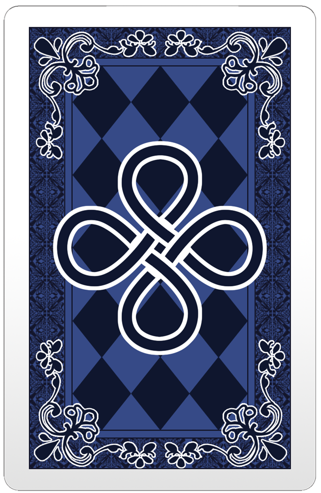

葛平（1960.6.4-），中国动画片配音演员、演员，湖南长沙人，曾为早期蓝猫系列中的蓝猫配音。2009年，因中国大陆网民的恶搞MAD视频而突然走红网络。葛平现在仍然在为三辰公司效力，但已经不再为蓝猫配音，而改配其他角色。2009年，某网民在优酷网上发表了一段名为“蓝猫的配音演员：葛平”的视频，一开始并没有起到很大的反响，只是在蓝猫迷圈子当中流传。但一位网友在中国著名ACG网站AcFun上将此视频发表后，令葛平在中国ACG界盛极一时。当时蓝猫系列在中国大陆网络恶评不断，一切有关蓝猫的视频都会遭到一定程度的恶搞或攻击，葛平也不例外。网民将葛平的两段自我介绍视频进行重新剪辑，产生了大量恶搞MAD，其中亦不乏对蓝猫和其本人的人身攻击。在某视频中，经过剪辑，葛平所说过“葛”字和“炮”字组合在了一起，就变成了“葛炮”，葛平也因此被网民附上了“葛炮”的称谓。
宽960px，居中的红色矩形（方法一）
宽960px，居中的红色矩形（方法二）
一个可复用的圆角矩形